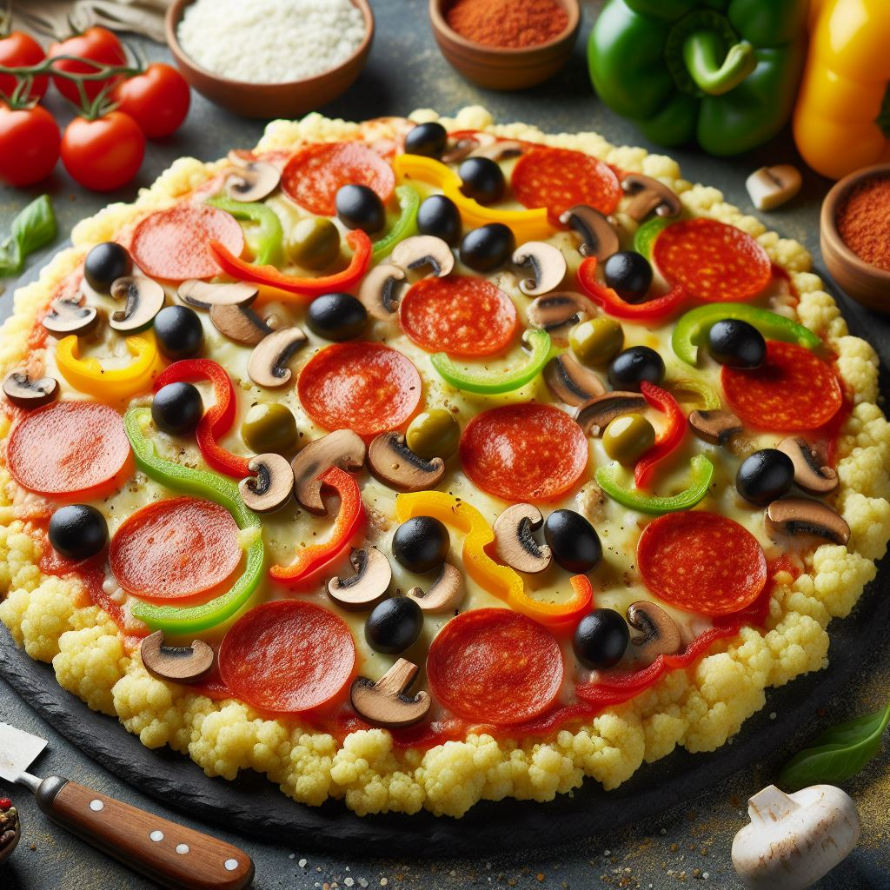

Cauliflower Crust Pizza

Ingredients:
- 1 medium head of cauliflower
- 1 egg
- 1/2 cup grated Parmesan cheese (or substitute with mozzarella cheese)
- 1 teaspoon Italian seasoning (or oregano)
- Salt and pepper to taste
- Pizza toppings of your choice (e.g., tomato sauce, cheese, vegetables, meats)
Instructions:
- Preheat your oven to 400°F (200°C). Line a baking sheet with parchment paper.
- Wash and dry the cauliflower. Cut it into florets, then pulse in a food processor until it resembles rice.
- Microwave the cauliflower rice in a microwave-safe bowl for about 5-6 minutes, or until it's cooked. Let it cool for a few minutes.
- Transfer the cooked cauliflower rice to a clean kitchen towel or cheesecloth. Squeeze out as much moisture as possible.
- In a mixing bowl, combine the cauliflower rice, egg, Parmesan cheese, Italian seasoning, salt, and pepper. Mix until well combined.
- Spread the cauliflower mixture onto the prepared baking sheet, shaping it into a thin crust.
- Bake the crust in the preheated oven for about 20-25 minutes, or until it's golden brown and firm to the touch.
- Once the crust is done, remove it from the oven and add your desired pizza toppings.
- Return the pizza to the oven and bake for an additional 10-15 minutes, or until the toppings are heated through and the cheese is melted and bubbly.
- Allow the pizza to cool slightly before slicing and serving. Enjoy your delicious cauliflower rice pizza!